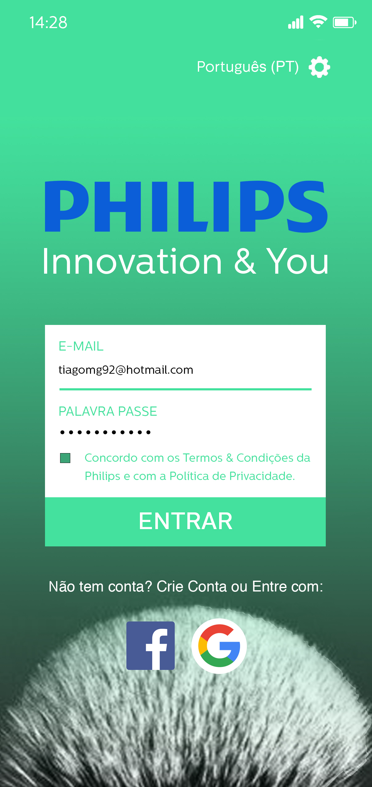

May 09, 2018
Idearte Magazine
This project consists of the creation of a graphic image and a cultural magazine for ESELx. The concept approached was the CMYK because the colors are strong, young and catch the reader's attention. Ide Idear Arte, in other words, Ideart, that's how the logo was born. The cover contains an assembly that intends to transmit the sensations that art evokes to us.
January 30, 2019
Phillips App

App launched in order to complete the new product we've created to the brand. Like our product, our app contains a palette of colors between green and dark gray, because our goal was to escape a bit of the stereotype of the blue tone associated with males. The chosen green, is intended to catch the user's attention as it is a visually attractive color. It is a clear and cheerful tone, which conveys freshness and refers to our target audience, young and adults. The choice of gray, contrasts with the color already mentioned in a way that was intended for the other part of the target audience, the adults. Dark gray is a strong, contrasting color that gives our product the elegance and masculine value, making it so visually balanced. Performed with Inês Bento and Inês Alves.
January 30, 2019
Razor Blade
A new product introduced in the Phillips market. In order to respond more effectively to the main need verified, the fact that it is difficult to grasp the cable, the model designed by us has a more organic shape and fits hand in any position you take. The cable has rubbers in the zones of greater impact to cushion the touch of the hand providing comfort to the user. As for the blades, we have three different: one for the face, one to the chest and one for the legs.
Each has a different size so as to cover a considerable area according to the zone in question. In response to the slip problem, we thought it would be important to create two wider lubricant bands than usual, hydrating twice as effective and avoiding skin irritation. The blade for the chest has a characteristic that distinguishes it, which has only two blades with greater spacing between them allowing easier hygiene of the same, allowing cutting thicker hair without accumulating between them. A support has also been developed for this product, which consists of a sphere with water inside it so that it is heavier than the blade and preventing it from being knocked over. Performed with Inês Bento and Inês Alves.
January 30, 2019
Charmander
3D modeling of a pokemon with Blender software.